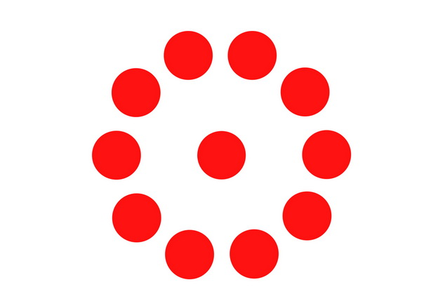

Поход выходного дня и тренировка по альпинизму 20.09.2015

Поход выходного дня 05.09.2015

Экспедиция на Яман-Тау 17-19.08.2015

Поход выходного дня 09-10.08.2015

Поход выходного дня 04-05.08.2015 "Босой туризм"

ПВД по маршруту оз.Банное - гора Кусимова, общая протяженность маршрута около - 20 км., способ передвежения - босиком, ощущения - незабываемые.
Доктрина

Доктрина "Собора" была существенно дополнена и переработана. Редакция Доктрины от 09 июля 2015 года - это наше Новое слово в философии, политике, социологии, праве, экономике и в других сферах знания.
Ознакомиться с полным текстом Доктрины "Собора" можно здесь.
Поход выходного дня 06-07.06.2015

Поход выходного дня 31.05.2015

Поход выходного дня 24.05.2015

День Победы

9 Мая 2015 года Правление МПОО "Собор" от лица всех наших соратников провело торжественное возложение венка к Вечному огню у монумента Тыл-фронту в Магнитогорске.
Сплав по Белой

В период с 1 по 4 мая 2015 года МПОО "Собор" успешно провел традиционный весенний сплав по реке Белая.
Тренировка по практической стрельбе 03.04.2015

7 лет со дня основания "Собора"
20 марта 2015 года исполняется 7 лет со дня основания "Собора"!
Правление МПОО/ОПД "Собор" от всего сердца поздравляет всех наших соратников с Днем рождения нашей Организации! Многое уже сделано, но еще бОльшее предстоит свершить! Ведь недаром гласит русская пословица: "Начало - полдела, конец - всему голова!"
И главное, всегда помните слова нашего великого полководца - А.В. Суворова: "Мы русские и поэтому победим!"
Спортивно-туристические курсы

Собор продолжает набор на спортивно-туристические курсы в Магнитогорске и Санкт-Петербурге.
1. Прикладной рукопашный бой и активная самооборона для женщин;
2. Общая физическая подготовка;
3. Туризм (ориентирование, выживание, альпинизм и многое другое).
Все занятия проводятся БЕСПЛАТНО.
На фото подъем на скалу в рамках тренировки участников "Собора" по альпинизму.
Запись по телефону: 8-950-747-79-01
День сапера 21.01.2015

Поход выходного дня Куропатка-ГЛЦ 17.01.2015

Поход выходного дня на Тюбетейку 07.01.2015

Поход выходного дня 07.12.2014

Поход выходного дня на Тюбетейку 04.11.2014

Тренировка по практической стрельбе 19.10.2014

Краеведческий поход 18-19.10.2014

Поход выходного дня 28.08.2014

Поход выходного дня 03.07.2014

Летняя спартакиада 08.06.2014

Поход выходного дня 11.05.2014

День Победы 09.05.2014

Поход (Банное-Арвякрязь) 01-04.05.2014

Соборность: онтологические и гносеологические аспекты

Вышла в свет монография Председателя Правления "Собора" Г.В. Барсукова "Соборность: онтологические и гносеологические аспекты". Свободное распространение материалов книги разрешается при обязательной ссылке на первоисточник: Соборность: онтологические и гносеологические аспекты: монография / Г.В. Барсуков. – Магнитогорск: МаГУ, 2014. – 183 с.
Русская идея – это Соборность, исследование объективного соотношения которой с бытием и познанием является главной задачей данной работы. Переоценить значимость этой книги для научного сообщества и широкого круга читателей нельзя, так как, согласно Аристотелю, синтез онтологической и гносеологической теории способен сформировать целостное мировоззрение, что в нашем случае означает рождение фундаментальной мировоззренческой концепции на основе традиционной Русской идеи. Появление столь мощного философского основания способно сыграть определяющую роль для всестороннего возрождения Русской Цивилизации.
Примечательно, что автор книги – Григорий Владимирович Барсуков является не только состоявшимся ученым-философом, занимающимся теорией, но и практиком социально-политической инженерии – Председателем Правления Межрегиональной патриотической общественной организации и Общественно-политического движения «Собор». Такое редкое сочетание теоретических оснований и практики дает право предположить, что данная монография имеет далеко идущие перспективы…
Основное содержание представленного вниманию читателя исследования получило признание в научных кругах и нашло отражение в докладах автора на всероссийских и международных научно-практических конференциях, а также на страницах рецензируемых журналов из перечня ВАК.
Ознакомиться с книгой можно здесь.
Выставка оружия 30.04.2014

Поход выходного дня 29.03.2014

Тренировка по практической стрельбе 09.02.2014

70-летию снятия блокады Ленинграда посвящается
День памяти Владимира Высоцкого

23 января 2014 года в школе №64 Магнитогорска "Собор" организовал День памяти великого русского поэта, актера и автора-исполнителя песен Владимира Высоцкого.
Поздравляем Григория Барсукова с присуждением ученой степени!

27 декабря 2013 года Председателю Правления МПОО/ОПД "Собор" Григорию Владимировичу Барсукову была присуждена учена степень кандидата философских наук за успешную защиту диссертации "Феномен соборности: онтологические и гносеологические аспекты". Мы искренне поздравляем Григория Барсукова с этим важным для всех нас научным достижением и желаем дальнейших успехов!
Поход выходного дня 10.11.2013

День оружейника 19.09.2013

Битва на Курской Дуге

Ровно 70 лет назад, в период с 5 июля по 23 августа 1943 года, грохотала сталью танковых сражений Битва на Курской дуге. Это поистине эпическое сражение стало величайшим всплеском мужества и страсти к жизни русского народа. В то далекое лето 1943 года русские мужчины и женщины при братской поддержке других народов нашего бескрайнего Отечества отстояли родную землю, обильно оросив ее собственной кровью. Такое не может быть забыто, ведь именно в грандиозных битвах под Москвой, Ленинградом, Сталинградом, Курском и Берлином наши предки не только выковали величайшую из всех известных человечеству побед – Победу во Второй Мировой Войне, но и приняли эстафету творцов мировой истории.
Наша память о великой Русской победе – это, возможно, наше главное духовное оружие для национального возрождения!
Это нужно понять всем, ведь все мы, как один, гордимся исторической победой нашего народа в Великой Отечественной Войне, и именно это является самым главным доказательством нашей несокрушимой силы! Сейчас такое напоминание из истории родного народа необходимо всем нам, как никогда. Поэтому уделите время и расскажите своим родным и близким о том, какой незабвенный подвиг совершили наши деды и прадеды 70 лет назад в Битве на Курской дуге.
Полезная информация:
1. Статья о Битве на Курской дуге на Википедии;
2. Х/ф «Великая Отечественная война. Освобождение. 1969. Фильм 1. Курская дуга».
Экспедиция на плато Маньпупунёр 2013

Экспедиция на Приполярный Урал успешно завершилась.
Маршрут и сроки спортивно-туристического путешествия были строго соблюдены. Главная цель - плато Маньпупунер достигнута.
Путешествие было совершено участниками "Собора", которые действовали самостоятельно, как физические лица. Официальное участие Организации в проведение данного мероприятия было отменено 14 июня 2013 года на заседание Правления "Собора" по причине того, что ФГБУ "Печоро-Илычский заповедник" не предоставило разрешения на посещение плато Маньпупунер, не смотря на все отправленные запросы.
Маршрутная таблица здесь.
Подробный фотоотчет здесь здесь.
Сплав по р.Белая

"Собор" успешно организовал сплав по р.Белая в Белорецком и Бурзянском районе Башкирии с 1 по 5 мая 2013 года.
Маршрут: от села Кага (турбаза Агидель) до Каповой пещеры (Шульган-Таш), итого 156,5 км. водного маршрута.
Оружейный магазин "Стрелец"

Давние партнеры "Собора" открыли в Магнитогорске новый оружейный магазин "Стрелец". В нем вы сможете найти не только первоклассный выбор оружия (охотничьего, гражданского, пневматического) и боеприпасов, но и широчайший ассортимент снаряжения для охоты и туризма.
Важными отличиями «Стрельца» от других оружейных магазинов являются высокопрофессиональные продавцы-консультанты и самые низкие в регионе цены на весь спектр представленных товаров. Также в оружейном магазине «Стрелец» можно абсолютно бесплатно оформить охотничий билет единого государственного образца.
Для получения охотничьего билет необходимо предоставить следующие документы:
1. Копия паспорта;
2. 2 фотокарточки 3*4 см;
3. Копия клубного охотничьего билета (при наличии);
4. Заявление (заполняется на месте);
5. Уведомление (заполняется на месте).
Адрес магазина: г. Магнитогорск, ул. Галиуллина, 9А.
Режим работы: с 10-00 ч. - 19-30 ч. без перерывов и выходных.
Контактный телефон «Стрельца»: 8-3519-34-26-11.
Информация размещена в рамках некоммерческого партнерства между МПОО «Собор» и ООО «Стрелец».
Национализм без либерализма
Внедорожное ралли 2013 на Южном Урале

9 февраля 2013 года "Собор" организовал и провел внедорожное ралли в горах Южного Урала.
День памяти Константина Васильева

22 декабря 2012 года "Собор" провел День памяти русского художника Константина Васильева в Картинной галерее г. Магнитогорск.
В рамках мероприятия зрителям были продемонстрированы цифровые копии картин художника. Просмотр сопровождался подробным рассказом о судьбе и творчестве Константина Васильева.
В завершении Дня памяти для всех присутствующих были исполнены бардовские песни, которые позволили глубже погрузиться в атмосферу той эпохи, когда художник писал свои картины.
"Нефть"
Погружение
Короткометражный фильм "Погружение" основан на вымышленном сюжете и снят в рамках некоммерческого сотрудничества между МПОО "Собор" и Медиа группой "Кадр".
Золотая Орда
Руководитель Политической школы "Собора", Сироткин Вячеслав Владимирович, аргументированно доказывает то, что Русь никогда не была под игом Золотой Орды, которая в свете изложенных автором фактов предстает в совершенно ином виде.
Это видео дает начало циклу передач "Точка зрения", в котором участники "Собора" изложат свои взгляды на принципиальные вопросы, от переоценки которых зависит успех нашей политической борьбы и имперское возрождение России.
Изложенная автором точка зрения является его самостоятельной разработкой, основанной на проведенных им изысканиях и личном опыте.
Летние старты 2012
Летняя спартакиада 2012

17 июня "Собор" провел традиционную Летную спартакиаду для учащихся Политехнического колледжа города Магнитогорска. В соревнованиях приняли участие первокурсники колледжа, которые с большим азартом участвовали во всех этапах спартакиады:
- конкурсе капитанов;
- командном зачете на прохождение полосы препятствий;
- личном и командном конкурсе по подтягиваниям.
В соревнованиях приняло участие около ста подростков, которые были поделены на десять команд, активно боровшихся за призовые места.
Занявшие призовые места команды и отдельные участники были награждены в торжественной обстановке грамотами и ценными призами.
Мы благодарим за поддержку в проведении Летней спартакиады страховую компанию "Согласие", компанию "Альбатрос" и магазин "Северный".
В ближайшее время мы опубликуем видеорепортаж о проведенных соревнованиях.
"Будущее"
Сайт "Великая Россия"

Предлагаем всем посетить новый патриотический ресурс "Собора".
Сайт "Великая Россия" является авторской разработкой нашего Регионального отделения в Санкт-Петербурге.
"Великая Россия": http://all-about-russia.ru/
Цена войны для народа

«Коса военной смерти уносит, прежде всего, трудоспособные возрасты населения. Война уносит преимущественно более здоровых, чем менее здоровых... Война уносит преимущественно мужчин, а не женщин и нарушает половой состав населения в пользу последних.
Современная армия — мужские агрегаты, следовательно, в войне гибнет мужская половина человеческого рода прежде всего, женская лишь постольку, поскольку она задевается повышенной смертностью гражданского населения... Война уносит преимущественно морально здоровые элементы и оставляет выживать элементы морально негодные, преступные.
Почему? Потому что преступники в армию не допускаются и не берутся. Стало быть, они риску гибели в войне не подвергаются, а, следовательно, имеют шансы на выживание больше, чем морально здоровые элементы населения. Больше того. Это положение можно формулировать и иначе. При войне, при равенстве прочих условий, гибнут сильнее лица с глубоким сознанием долга перед страной, родиной, своей группой, чем лица, не имеющие такого сознания. Первые в силу глубоких моральных импульсов не уклоняются от риска, не стараются «окопаться» в тылу, увильнуть от фронта или занять безопасное место. Они идут на риск, если он нужен. Они идут на смерть, если она необходима.
Иное дело «шкурники»: они всеми правдами и неправдами окапываются в тылу, пытаются увильнуть от риска и опасности, словом — имеют больше шансов на сохранение жизни, чем первые.
«Леонид и 300 спартанцев» погибли и гибнут, а шкурники, мародеры и тыловые герои выживают. Это в одинаковой степени относится как к гражданской, так и к межгосударственной войне, но особенно к первой. Опыт и прошлых, и современной гражданских войн показывает, что с той и с другой стороны честные и убежденные бойцы гибнут, шкурники — выживают. Война прямо и косвенно пожирает в большей степени духовно одаренных (более волевых, более развитых, более талантливых), чем неодаренных.»
В глобальном историческом смысле в приведенном отрывке из статьи русского мыслителя содержится объяснение того парадокса, когда целые сильные нации победителей, оставивших след в истории, оказываются на пороге демографической катастрофы, а якобы «гонимые» и «репрессированные» слои и народы — в выгодном преимущественном положении.
В.В.Сироткин
Соборная спартакиада 2012 в Политехническом колледже
Практическая стрельба
Тренировка руководителей "Собора" по практической стрельбе
30 ноября 2011 года прошла очередная тренировка руководителей "Собора" по практической стрельбе в рамках сотрудничества с Федерацией Практической Стрельбы России.
В тренировке использовались следующие виды оружия:
1. Пистолет Викинг (спортивная модификация Пистолета Ярыгина, калибр 9*19);
2. Пистолет Cz 75 (калибр 9*19);
3. Гладкоствольные ружья Сайга 20 и 410 (на базе АК-47, калибр 20 и 410).
Показательная стрельба: Николай Оншин.
В тренировке использовались следующие виды оружия:
1. Пистолет Викинг (спортивная модификация Пистолета Ярыгина, калибр 9*19);
2. Пистолет Cz 75 (калибр 9*19);
3. Гладкоствольные ружья Сайга 20 и 410 (на базе АК-47, калибр 20 и 410).
Показательная стрельба: Николай Оншин.